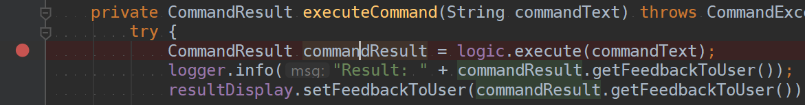
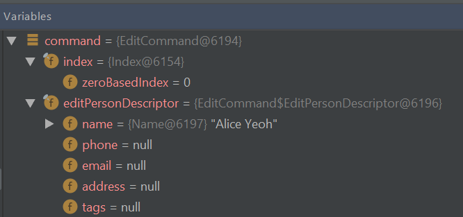

Indeed, the ratio of time spent reading versus writing is well over 10 to 1. We are constantly reading old code as part of the effort to write new code. …[Therefore,] making it easy to read makes it easier to write.
— Robert C. Martin Clean Code: A Handbook of Agile Software Craftsmanship
When trying to understand an unfamiliar code base, one common strategy used is to trace some representative execution path through the code base. One easy way to trace an execution path is to use a debugger to step through the code. In this tutorial, you will be using the IntelliJ IDEA’s debugger to trace the execution path of a specific user command.
Before we jump into the code, it is useful to get an idea of the overall structure and the high-level behavior of the application. This is provided in the ‘Architecture’ section of the developer guide. In particular, the architecture diagram (reproduced below), tells us that the App consists of several components.
It also has a sequence diagram (reproduced below) that tells us how a command propagates through the App.

Note how the diagram shows only the execution flows between the main components. That is, it does not show details of the execution path inside each component. By hiding those details, the diagram aims to inform the reader about the overall execution path of a command without overwhelming the reader with too much details. In this tutorial, you aim to find those omitted details so that you get a more in-depth understanding of how the code works.
Before we proceed, ensure that you have done the following:
As you know, the first step of debugging is to put in a breakpoint where you want the debugger to pause the execution. For example, if you are trying to understand how the App starts up, you would put a breakpoint in the first statement of the main method.
In our case, we would want to begin the tracing at the very point where the App start processing user input (i.e., somewhere in the UI component), and then trace through how the execution proceeds through the UI component. However, the execution path through a GUI is often somewhat obscure due to various event-driven mechanisms used by GUI frameworks, which happens to be the case here too. Therefore, let us put the breakpoint where the UI transfers control to the Logic component.
According to the sequence diagram you saw earlier (and repeated above for reference), the UI component yields control to the Logic component through a method named execute. Searching through the code base for an execute() method that belongs to the Logic component yields a promising candidate in seedu.address.logic.Logic.
execute, not simply the text execute.
A quick look at the seedu.address.logic.Logic (an extract given below) confirms that this indeed might be what we’re looking for.
public interface Logic {
/**
* Executes the command and returns the result.
* @param commandText The command as entered by the user.
* @return the result of the command execution.
* @throws CommandException If an error occurs during command execution.
* @throws ParseException If an error occurs during parsing.
*/
CommandResult execute(String commandText) throws CommandException, ParseException;
...
}
But apparently, this is an interface, not a concrete implementation. That should be fine because the Architecture section of the Developer Guide tells us that components interact through interfaces. Here’s the relevant diagram:

Next, let’s find out which statement(s) in the UI code is calling this method, thus transferring control from the UI to the Logic.
Bingo! MainWindow#executeCommand() seems to be exactly what we’re looking for!
Now let’s set the breakpoint. First, double-click the item to reach the corresponding code. Once there, click on the left gutter to set a breakpoint, as shown below. 
Recall from the User Guide that the edit command has the format: edit INDEX [n/NAME] [p/PHONE] [e/EMAIL] [a/ADDRESS] [t/TAG]… For this tutorial we will be issuing the command edit 1 n/Alice Yeoh.
To start the debugging session, simply Run > Debug Main
When the GUI appears, enter edit 1 n/Alice Yeoh into the command box and press Enter.
The Debugger tool window should show up and show something like this:

Use the Show execution point feature to jump to the line of code that we stopped at:

CommandResult commandResult = logic.execute(commandText); is the line that you end up at (i.e., the place where we put the breakpoint).
We are interested in the logic.execute(commandText) portion of that line so let’s Step in into that method call:

We end up in LogicManager#execute() (not Logic#execute – but this is expected because we know the execute() method in the Logic interface is actually implemented by the LogicManager class). Let’s take a look at the body of the method. Given below is the same code, with additional explanatory comments.
LogicManager#execute().
@Override
public CommandResult execute(String commandText)
throws CommandException, ParseException {
//Logging, safe to ignore
logger.info("----------------[USER COMMAND][" + commandText + "]");
CommandResult commandResult;
//Parse user input from String to a Command
Command command = addressBookParser.parseCommand(commandText);
//Executes the Command and stores the result
commandResult = command.execute(model);
try {
//We can deduce that the previous line of code modifies model in some way
// since it's being stored here.
storage.saveAddressBook(model.getAddressBook());
} catch (IOException ioe) {
throw new CommandException(FILE_OPS_ERROR_MESSAGE + ioe, ioe);
}
return commandResult;
}
LogicManager#execute() appears to delegate most of the heavy lifting to other components. Let’s take a closer look at each one.
Step over the logging code since it is of no interest to us now.

AddressBookParser#parseCommand() method (partial code given below):
public Command parseCommand(String userInput) throws ParseException {
...
final String commandWord = matcher.group("commandWord");
final String arguments = matcher.group("arguments");
...
Step over the statements in that method until you reach the switch statement. The ‘Variables’ window now shows the value of both commandWord and arguments:

We see that the value of commandWord is now edit but arguments is still not processed in any meaningful way.
Stepping through the switch block, we end up at a call to EditCommandParser().parse() as expected (because the command we typed is an edit command).
...
case EditCommand.COMMAND_WORD:
return new EditCommandParser().parse(arguments);
...
Let’s see what EditCommandParser#parse() does by stepping into it. You might have to click the ‘step into’ button multiple times here because there are two method calls in that statement: EditCommandParser() and parse().
step out button to get out of them!
Stepping through the method shows that it calls ArgumentTokenizer#tokenize() and ParserUtil#parseIndex() to obtain the arguments and index required.
The rest of the method seems to exhaustively check for the existence of each possible parameter of the edit command and store any possible changes in an EditStudentDescriptor. Recall that we can verify the contents of editStudentDesciptor through the ‘Variables’ window.

As you just traced through some code involved in parsing a command, you can take a look at this class diagram to see where the various parsing-related classes you encountered fit into the design of the Logic component.

Let’s continue stepping through until we return to LogicManager#execute().
The sequence diagram below shows the details of the execution path through the Logic component. Does the execution path you traced in the code so far match the diagram?
Now, step over until you read the statement that calls the execute() method of the EditCommand object received, and step into that execute() method (partial code given below):
EditCommand#execute():
@Override
public CommandResult execute(Model model) throws CommandException {
...
Student studentToEdit = lastShownList.get(index.getZeroBased());
Student editedStudent = createEditedStudent(studentToEdit, editStudentDescriptor);
if (!studentToEdit.isSameStudent(editedStudent) && model.hasStudent(editedStudent)) {
throw new CommandException(MESSAGE_DUPLICATE_STUDENT);
}
model.setStudent(studentToEdit, editedStudent);
model.updateFilteredStudentList(PREDICATE_SHOW_ALL_STUDENTS);
return new CommandResult(String.format(MESSAGE_EDIT_STUDENT_SUCCESS, editedStudent));
}
command#execute() does indeed make changes to the model object. Specifically,
setStudent() method (defined in the interface Model and implemented in ModelManager as per the usual pattern) to update the student data.updateFilteredStudentList method to ask the Model to populate the ‘filtered list’ with all students.edit command, we populate it with all the students so that the user can see the edited student along with all other students. If this was a find command, we would be setting that list to contain the search results instead.Model component. See if you can figure out where the ‘filtered list’ of students is being tracked.

Model component section of the DGAs you step through the rest of the statements in the EditCommand#execute() method, you’ll see that it creates a CommandResult object (containing information about the result of the execution) and returns it.
Advancing the debugger by one more step should take you back to the middle of the LogicManager#execute() method.
Logic component in action, see if you can identify in this partial class diagram some of the classes you’ve encountered so far, and see how they fit into the class structure of the Logic component:

Logic component section of the DGSimilar to before, you can step over/into statements in the LogicManager#execute() method to examine how the control is transferred to the Storage component and what happens inside that component.
storage.saveAddressBook(model.getAddressBook()) which contains multiple method calls, Intellij will let you choose (by clicking) which one you want to step into.
As you step through the code inside the Storage component, you will eventually arrive at the JsonAddressBook#saveAddressBook() method which calls the JsonSerializableAddressBook constructor, to create an object that can be serialized (i.e., stored in storage medium) in JSON format. That constructor is given below (with added line breaks for easier readability):
JsonSerializableAddressBook constructor:
/**
* Converts a given {@code ReadOnlyAddressBook} into this class for Jackson use.
*
* @param source future changes to this will not affect the created
* {@code JsonSerializableAddressBook}.
*/
public JsonSerializableAddressBook(ReadOnlyAddressBook source) {
students.addAll(
source.getStudentList()
.stream()
.map(JsonAdaptedStudent::new)
.collect(Collectors.toList()));
}
It appears that a JsonAdaptedStudent is created for each Student and then added to the JsonSerializableAddressBook.
This is because regular Java objects need to go through an adaptation for them to be suitable to be saved in JSON format.
Storage component, here is the component’s class diagram to help you understand how those classes fit into the structure of the component.Storage component section of the DGWe can continue to step through until you reach the end of the LogicManager#execute() method and return to the MainWindow#executeCommand() method (the place where we put the original breakpoint).
Stepping into resultDisplay.setFeedbackToUser(commandResult.getFeedbackToUser());, we end up in:
ResultDisplay#setFeedbackToUser()
public void setFeedbackToUser(String feedbackToUser) {
requireNonNull(feedbackToUser);
resultDisplay.setText(feedbackToUser);
}
MainWindow#executeCommand().UI component section of the DGIn this tutorial, we traced a valid edit command from raw user input to the result being displayed to the user. From this tutorial, you learned more about how the various components work together to produce a response to a user command.
Here are some quick questions you can try to answer based on your execution path tracing. In some cases, you can do further tracing for the given commands to find exactly what happens.
In this tutorial, we traced the “happy path” (i.e., no errors). What do you think will happen if we traced the following commands instead? What exceptions do you think will be thrown (if any), where will the exceptions be thrown and where will they be handled?
redit 1 n/Alice Yu
edit 0 n/Alice Yu
edit 1 n/Alex Yeoh
edit 1
edit 1 n/アリス ユー
edit 1 t/one t/two t/three t/one
What components will you have to modify to perform the following enhancements to the application?
Make command words case-insensitive
Allow delete to remove more than one index at a time
Save the address book in the CSV format instead
Add a new command
Add a new field to Student
Add a new entity to the address book